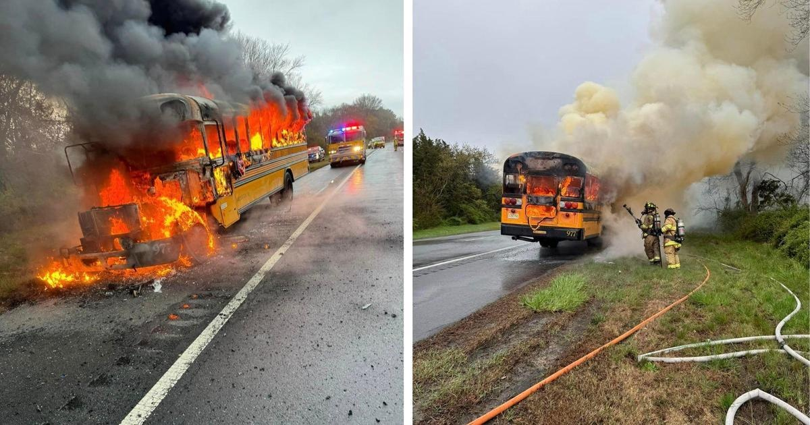

School bus catches fire on Garden State Parkway in South Jersey, no injuries reportedUPPER TOWNSHIP, N.J. (CBS) — A bus driver in South Jersey is being hailed as a hero after her bus caught fire on the Garden State Parkway while taking kids home from school Wednesday. The Ocean City Intermediate School bus caught on fire in Upper Township on Wednesday while on the way to Sea Isle City, the Ocean City School District said in a statement Thursday. Seaville Fire and Rescue Company and Upper Township EMS were called to mile marker 20.8 on the southbound side of the Parkway shortly after 2:30 p.m., where they found heavy fire coming from the bus. Officials said the driver and all 10 students who were on the bus were safely out of the vehicle by the time fire crews arrived. "The students acted swiftly and calmly as they followed the driver's directions to exit the bus as soon as a problem was identified. They should be commended, and we are thankful that everyone is safe," the district said in a statement. "We would also like to recognize the Sheppard Bus driver for her actions and concern for our students. She was a true hero and showed the utmost care for our students, making sure they were all out of harm's way after exiting the bus." The children were picked up by family members at the scene. Crews worked to take down the blaze for about two hours, and the Marmora Volunteer Fire Company helped provide extra water and manpower. The Cape May County fire marshals office and New Jersey State Police are investigating the cause of the fire. |
 |